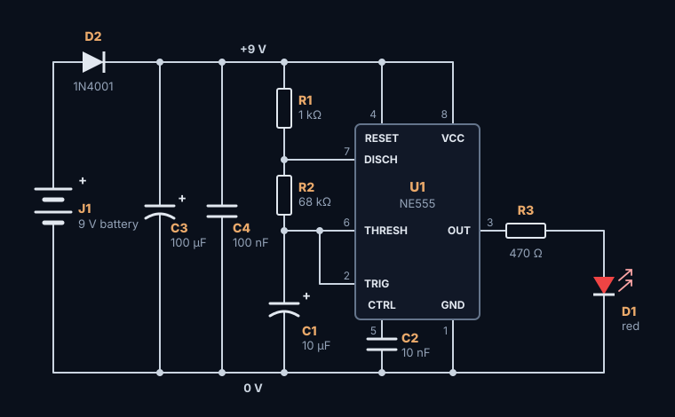

What you're building
A 555 timer chip switching an LED on and off about once a second, powered by a 9 V battery, on a perfboard 20 holes by 15. It's the classic first project for good reasons: a handful of cheap parts, a chip you'll meet again and again, and an obvious sign that it works.

The schematic
Read it left to right: power comes in through a protection diode, the 555 in the middle keeps time, and the LED on the right shows it.


The same thing in words, connection by connection:
- +9 V: from the battery's + through D2, to the + of C3, to C4, R1, and the 555's pins 4 and 8.
- 0 V: the battery's −, the − of C3 and C1, C4, C2, the LED's cathode and the 555's pin 1.
- Timing: R1 and R2 meet at pin 7; R2 and C1's + meet at pins 6 and 2, which are joined together.
- Output: pin 3 lights the LED through R3, and C2 sits between pin 5 and 0 V.
How it works
Wired like this, the 555 is astable: it never settles, but flips its output between high and low by itself, forever. C1 is the clock:
Charge
C1 charges through R1 and R2. Meanwhile the output, pin 3, is high, and the LED is on.
Flip to off
When C1 reaches two thirds of the supply, pin 6 (threshold) notices: the output goes low, the LED goes off, and pin 7 (discharge) starts emptying C1 through R2.
Flip to on
When C1 falls to one third of the supply, pin 2 (trigger) notices: the output goes high again, pin 7 lets go, and C1 charges once more.
The parts set the times:
| Formula | Here | |
|---|---|---|
| LED on | 0.693 × (R1 + R2) × C1 | 0.693 × 69 kΩ × 10 µF ≈ 0.48 s |
| LED off | 0.693 × R2 × C1 | 0.693 × 68 kΩ × 10 µF ≈ 0.47 s |
| Flashes per second | 1.44 ÷ ((R1 + 2 × R2) × C1) | 1.44 ÷ (137 kΩ × 10 µF) ≈ 1.05 |
Because R1 is small next to R2, the LED is on and off for almost the same time. To change the speed, change C1: 4.7 µF flashes about twice as fast, 22 µF about half as fast.
Every part's job
| Part | Value | Its job |
|---|---|---|
| U1 | NE555 timer | The clock: switches its output as C1 charges and discharges |
| R1 | 1 kΩ | Charges C1 with R2, and stops pin 7 shorting the supply when it discharges |
| R2 | 68 kΩ | Sets both times with C1 |
| C1 | 10 µF | The timing capacitor: bigger is slower |
| C2 | 10 nF | Steadies pin 5 (control), so noise can't nudge the timing |
| R3 | 470 Ω | Limits the LED's current to about 10 mA |
| D1 | Red LED | The blink |
| D2 | 1N4001 | Blocks the current if the battery goes on backwards |
| C3 | 100 µF | The bulk capacitor: steadies the supply |
| C4 | 100 nF | Decouples the 555: supplies the quick gulps of current it takes as it switches |
| J1 | Screw terminal | Where the battery clip's wires go |
Parts list
| Part | What to buy | Notes |
|---|---|---|
| U1 | NE555 timer, 8-pin DIP | And an 8-pin DIP socket |
| R1 | 1 kΩ resistor, ¼ W | Bands: brown, black, red |
| R2 | 68 kΩ resistor, ¼ W | Bands: blue, gray, orange |
| R3 | 470 Ω resistor, ¼ W | Bands: yellow, violet, brown |
| C1 | 10 µF electrolytic capacitor | 16 V or more |
| C2 | 10 nF ceramic capacitor | Marked 103 |
| C3 | 100 µF electrolytic capacitor | 16 V or more |
| C4 | 100 nF ceramic capacitor | Marked 104 |
| D1 | Red LED, 3 or 5 mm | Another color works too |
| D2 | 1N4001 diode | Any 1N400x will do |
| J1 | 2-way screw terminal, 5.08 mm | For the battery clip's wires. The stripboard version takes a 2-pin header, 2.54 mm, instead |
And: a 9 V battery and clip, perfboard of at least 20 × 15 holes (a 5 × 7 cm board has room), bare tinned wire for the copper side, a little red and yellow solid-core wire, and four M3 screws and standoffs if you'll mount it.
The perfboard layout

Power comes in on the left edge through D2, with C3 beside it; +9 V runs along the top and 0 V along the bottom; the chip sits in the middle with C4 across its supply pins, the timing parts in a column on the right and the LED at the bottom left. A red jumper takes reset to +9 V, and a short link under the socket joins pins 2 and 6. How it was planned is in the layout guide's worked example.
The stripboard version

The same parts, but for J1, on a stripboard 20 holes by 15. J1 is a 2-pin header (2.54 mm) here, for a battery clip with a matching plug, as its two pins sit on the neighboring +9 V and ground strips. Six links and six cuts: four under the chip, one to put D2 in line with the supply, and one to keep the LED's strip short. The stripboard guide explains each one.
Build it
- Prepare the board: cut it to size if you need to, and put a dot of marker on the same corner of both faces, to count holes from.
- Solder the lowest parts first: the red jumper; then R1, R2, R3 and D2; the socket, with no chip in it; C2 and C4; the LED and the electrolytics C1 and C3; and the terminal J1 last.
- Check every polarity as each part goes in: D2's band away from the terminal, the LED's flat side and the capacitors' stripes toward 0 V, the socket's notch at the top.
- Wire the copper side from a print of the solder side: the solder bridges between neighboring pads, then the bare wire, rails first, and the yellow link under the socket from pin 2 to pin 6.
- Tidy up: trim the leads and clean the flux off with isopropyl alcohol.
The order is explained in How to solder, and the wiring in How to wire a perfboard. The bench card has the essentials on one page for the bench.
Test it, then switch on
- Look at every joint and every polarity again.
- Beep every connection with a meter, and the near misses: pins 2 and 6 are joined, but neither may beep to pins 3 or 7.
- Measure across C3 with the chip out: the reading climbs as the capacitors charge. Close to 0 Ω means a short.
- Power up with the chip out, through a 100 Ω resistor or a 50 mA current limit: almost no current once the capacitors have charged.
- Measure from socket pin 1 to pin 8: a little under the battery's voltage.
- Switch off, plug the 555 in with its notch matching the socket's, and power up: the LED flashes about once a second, and the board draws about 15 mA.
Every step, with the readings, is in the testing guide's worked example.
If it doesn't blink
| What you see | What to check |
|---|---|
| Nothing at all | The battery and its clip; D2 the right way round, band away from the terminal; the terminal's screws |
| The LED never lights | The LED the right way round, flat side to 0 V; R3 and its joints; pin 3's wiring |
| The LED stays on, or stays off | The link between pins 2 and 6; C1 the right way round; R2's value (blue, gray, orange) |
| Too fast or too slow | C1 and R2: a 1 µF in place of 10 µF flashes ten times as fast |
| Something gets warm | Disconnect first. Then a short across the supply, or C1, C3 or D2 in backwards |
| Works only when you press it | A bad joint, or the chip not pushed fully into its socket |
Frequently asked questions
How do I make the 555 LED blink faster or slower?
Change C1 or R2. Halving C1 doubles the rate: 4.7 µF flashes about twice a second, 22 µF about once every two seconds. The rate is 1.44 ÷ ((R1 + 2 × R2) × C1).
Can the 555 blinker run from 5 V or USB?
Yes, with two changes. The NE555 needs at least 4.5 V and D2 takes about 0.7 V, so use a Schottky diode such as a 1N5817, or the CMOS TLC555, which runs from 2 V. And lower R3 to about 220 Ω so the LED stays bright.
What does the capacitor on pin 5 do?
It steadies the 555's control voltage, which sets the two-thirds and one-third switching points. The blinker usually works without it, but the timing can wobble with noise on the supply.
Why is there a diode at the power input?
It's reverse-polarity protection: if the battery goes on backwards, D2 blocks the current instead of letting it flow through the chip and capacitors the wrong way. It costs about 0.7 V, which the 555 doesn't mind at 9 V.
Further reading
The sources behind this guide, and good places to go deeper:
- NE555 datasheet (Texas Instruments)
- TLC555 datasheet (Texas Instruments)
- 555 timer IC (Wikipedia)
- 555 timer circuits (Electronics Club)
Plan your next board in Perfboard Designer
Free, in your browser, no sign-up: lay out perfboard or stripboard, check every connection, flip to the solder side and print it at true size.